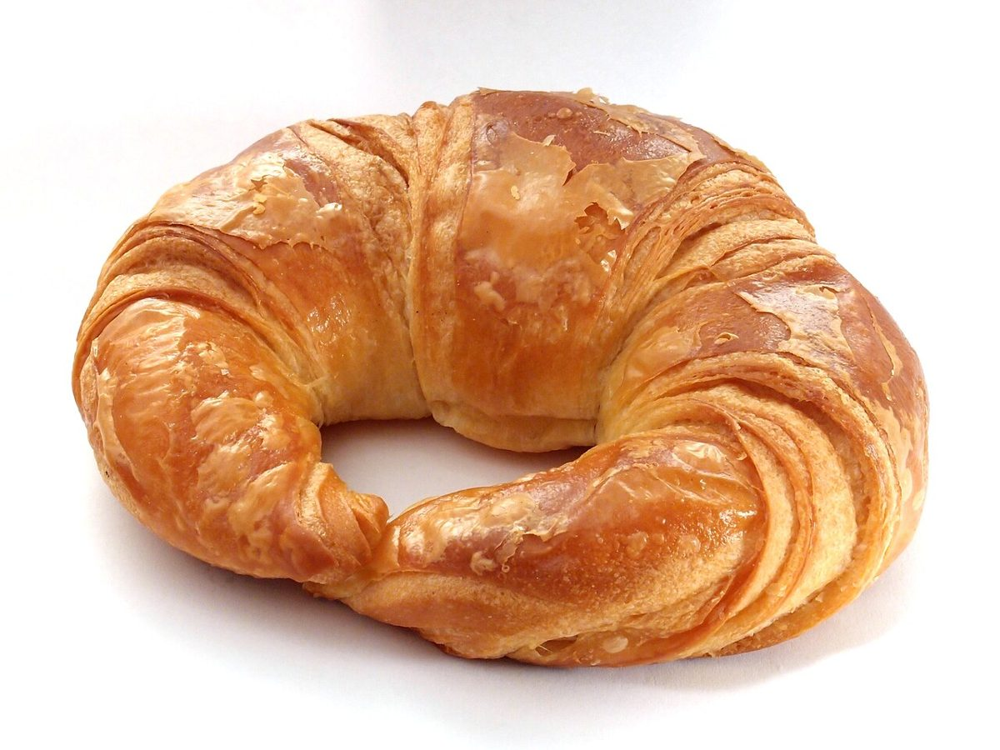

カフェ / 静岡県磐田市
24Cafe
静岡県磐田市のカフェ「24Cafe」のご案内ページです。営業時間やメニューなど、詳しいことは準備中。電話とInstagramがお問い合わせ先です。

制作側の連想
24行目の、4つのセルを読む
制作側は屋号「24Cafe」を、表計算ソフトのセル番地として読んでみました。「24」は行の番号、「C」「A」「F」「E」は列の名前。24行目の C・A・F・E の4つのセルを順に読むと、そのまま「Cafe」になります。お店の理念・由来とは無関係の、制作側の連想です。
24
C24C
A24a
F24f
E24e
=C24&A24&F24&E24 → Cafe
写真のイメージ
豆とパンの写真4枚
写真は磐田市やお店のものではありません。撮影地不明のフリー素材で、お店の商品ではありません。


ご案内
お店のこと(確認できたものだけ)
| 所在地 | 〒438-0805 静岡県磐田市池田425-3 |
|---|---|
| 電話 | 0538-33-7719 |
| 営業時間 | 準備中 |
| 定休日 | 準備中 |
| ご予約 | 準備中 |
| 駐車場 | 準備中 |
| SNS | Instagram @24cafe_ |